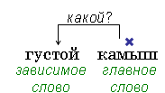

Словосочетание состоит из главного слова и зависимого.
Зависимое слово помогает более точно назвать признак предмета, признак действия, качество признака. Оно связано с главным словом по смыслу.
|
Словосочетанием называется два или несколько слов, объединённых по смыслу и грамматически. Словосочетание состоит из главного слова и зависимого. Зависимое слово помогает более точно назвать признак предмета, признак действия, качество признака. Оно связано с главным словом по смыслу. |
Смысловая связка устанавливается по вопросам, которые ставятся от главного слова к зависимому.
 |
 |
|
во дворе – не является словосочетанием наступил день – не является словосочетанием |
|
Предложением
называется слово или несколько слов, в которых заключается сообщение, вопрос, побуждение (приказ, совет, просьба). Для предложения характерна определённая интонация. В конце предложения голос понижается. |
|
Предложения, состоящие только из главных членов называются нераспространёнными. Предложения, имеющие своём составе второстепенные члены, называются распространёнными. |
|
Нераспространенные предложения: Наступила весна. Начиналось утро. Распространенные предложения: Над степью ярко светило солнце. Мальчик ночевал на берегу озера. |